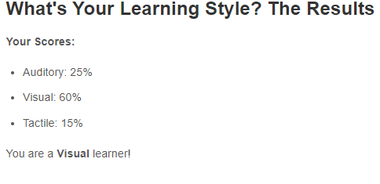
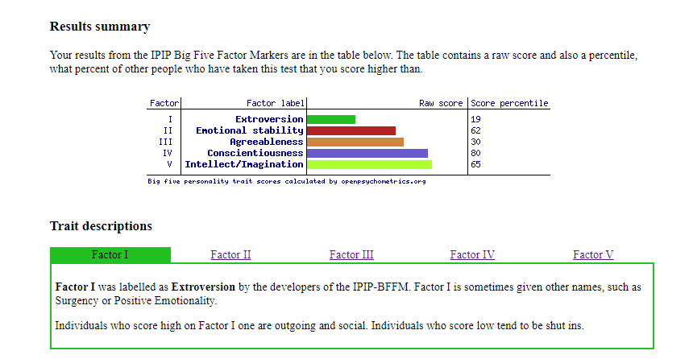
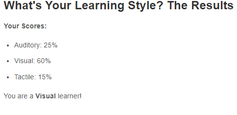
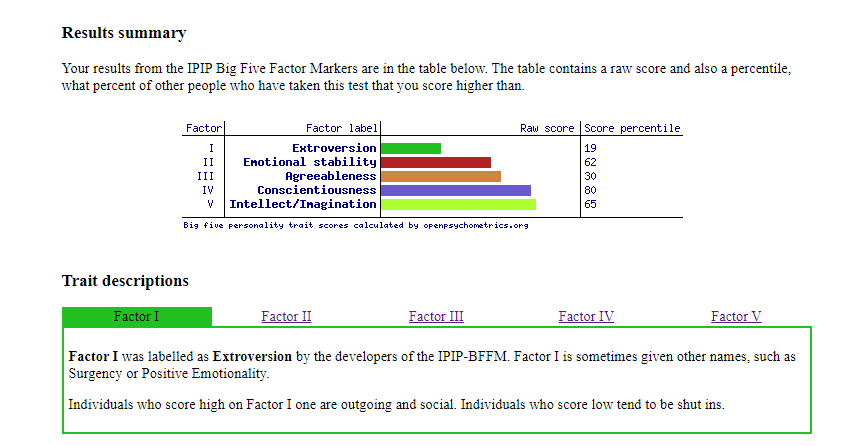

About Nicholas
Nicholas Joiner is currently a student enrolled in Introduction to Information Technology and Introduction to Programming through Open Universities Australia studying at RMIT. Previously worked as an apprentice mechanical aircraft engineer for in mostly the private aviation sector but decided to change career pathways and pursue a career pathway in IT.
Interesting fact about myself
Currently I am living in a historical homestead called ‘Dromkeen’ that was built for Judge Author Wolfe Chomley in 1989, who acted as an assistant prosecutor for Ned Kelly case. Dromkeen Homestead in recent years has mostly been known as the hub for children’s literature within Australia, with Various different Australian Authors Illustrators books and artwork on display. The original Dromkeen collection and sculptures have since been donated to the Victoria State Library. Dromkeen now currently has Author/Illustrator Mark Wilsons new exhibition on display.
What are my Interests in IT?
From an early age, I have always been quite fascinated with different forms of Technology. I have always enjoyed building and maintaining computers, deconstructing and fixing various laptops and mobile phone devices around the house. I also try to keep informed about the various technological news from around the world. I have also been quite fascinated about have different devices seamlessly interact with each other.
Information Technology is particularly quite like Aviation in the aspect that there is quite a lot of problem-solving is involved and that you have troubleshot and understood how a particular system works to find a solution.
Why did you choose to come to RMIT?
I choose to study RMIT to further my interests in IT and as RMIT is one of the leading universities in Australia when it comes to Information Technology. Through RMIT, I hope to expand my knowledge about IT and how it can be applied in a different situations and to advance in my pathway towards a career in IT.
Ideal Job
updating shortly...
Personal Profile
I have included 3 personality profile tests from 3 different sources
- Myers-Briggs
- learning style test
- Big 5 personalty test
 



What do the results of these tests mean for you?
After completing these three tests, I noticed that some of the results contradict themselves. When comparing the Myer-Briggs 16 personalities test compared to the Big 5 test, the agreeableness/cooperation results seem to contradict each other. Although there is some information that I can relate to the Myer-Briggs 16 personality test, for instance, I do particularly like to create a secure and stable environment for myself. I do see myself as a cooperative, practical and grounded as a person, but do like to think realistically. Which means I also try to avoid risky or unpredictable situations if I mainly visualise what could go wrong in a particular case, I can avoid it. It also might mean I might try to avoid learning something new or be open to new experiences or exploring new environments.
How should you take this into account when forming a team?
When working in a group, I should be more open and mindful to new alternative options even if I think I am doing a particular task practically.GroupProject Idea
The group project idea is to develop a mobile gaming application that targets the age demographic of 35 and over. The group will collectively choose what type of game they would like to create that is targeting this specific age group, whether it is to create a casual puzzle game or make a visually appealing story-oriented RPG(role-playing game). The game needs to feel meaningful to the user and actively challenge the user.
Why this age demographic? Why mobile gaming?
According to MoPub, the average age for mobile gamers is 35 and over.
According to DCI(Dot Com Infoway), in 2019, it was estimated that the global gaming market is worth over $152 billion. The global gaming market is expected to reach over $165.9 billion by 2020.[2]
Mobile gaming sector also dominates the gaming market industry at 51%, followed by console 25% and PC games 24%. It is steadily increasing year after year, and as Smartphones are becoming more accessible to the general population around the world, creating new opportunities for more mobile gaming creators.
Game creation
Instead of locking the team into a particular game genre, I thought it would be interesting to allow the group to collectively choose what kind of game they would like to create.
This group project would also include a specific variable target audience of the most popular age demographic. The idea behind this is to encourage group participation from the start of the project. Some ideas for the type of game the group could make range from casual, adventure, action, card games, strategy, sports, trivia and word games.Currently, as of 2020 some of the more popular genres for mobile gaming include: [2]
- Puzzles
- Arcade
- Action
- Racing
- Adventure
Game Functions:
Gameplay for the user should feel highly interactive and meaningful, including something like a game progression systems, that contains levels or checkpoints, gear progression or equipment upgrades to create significant progress throughout the game.
The user should feel that the user interface is highly intuitive and is easy to use. The gameplay should feel like it flows well from one scene to the next so that the user does not feel lost or confused at any point(not randomly jumping around back and forth between locations).
Visually the game should make the user feel compelled to keep playing and retain the user's full attention completely throughout the use of the game. It could also include features like character customisation or vehicle modifications, so there are different forms of interaction throughout the game. The game background should suit the genre type of gameplay; it should feel evenly balanced, not overcluttered or oversimplified.
The controls for this game should not feel overcomplicated so that if they were to pick up the game for the first time, they intuitively be able to understand how to play this game without the use of a manual. The game should include a variety of goals for the user to complete and to make them feel like they have accomplished something within this game(goal to work towards).
The game should also consist of music/sound that is suitable for the game type, that the music does not clash with the game genre type eg.rock music in a casual adventure type game.
Free tools for mobile app development:
Depending on what kind of game the group wants to make(2D or 3D), there is a selection of different tools that are available to use to develop the mobile game app, such as Unity, Unreal Engine, Corona SDK, Godot and Amazon Lumberyard. The required HDD space would also be a limiting factor as Unreal Engine, for instance, takes up over 20GB of HHD space. Out of all these different programs, Unity seems to be the easiest one to learn
Skills Required
The group will be required to learn a "Native programming language" type from one of the previously stated gaming development applications. Learning another programming language could be quite daunting at this point, although the most common languages are C++, Objective-C, C#, Java, Lua.